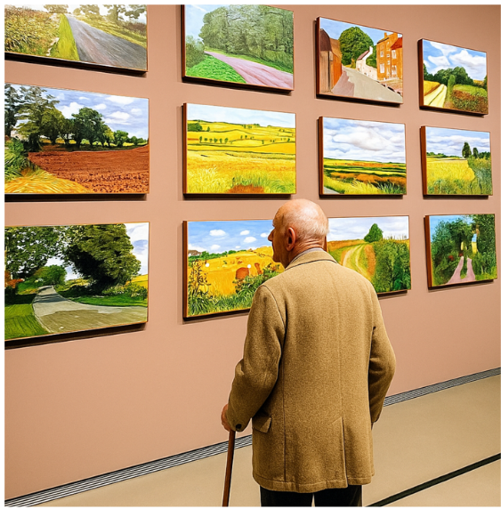
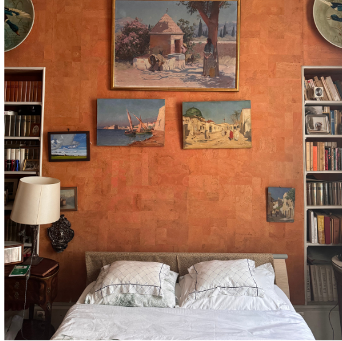

Services d'aide à domicile aux personnes âgées
L'accompagnement de la personne est assuré par notre équipe de moniteurs entièrement personnalisé.
Par facilitation d'aide à la motivation de l'envie à domicile d'autonomie, une routine quotidienne adaptée ainsi
qu'une organisation structurée sont mises en place pour soutenir le patient tout au long de la journée.
L'objectif est de favoriser le maintien de son autonomie en l'encourageant activement à réaliser les gestes de la vie quotidienne par lui-même, tout en bénéficiant d'une présence bienveillante et sécurisante.
L'objectif est de favoriser le maintien de son autonomie en l'encourageant activement à réaliser les gestes de la vie quotidienne par lui-même, tout en bénéficiant d'une présence bienveillante et sécurisante.
1
Aide au lever, toilette, petit déjeuner
La journée débute par l'intervention de l'auxiliaire de vie au domicile
du patient, qui l'assiste dans sa toilette (douche en salle de bain ou toilette
complète au lit et change si nécessaire), ainsi que pour se
coiffer, s'habiller, mettre ses appareils auditifs, etc.
Elle procède ensuite le petit-déjeuner et veille à ce que le patient s'alimente correctement et prend bien ses médicaments. Ce moment privilégié permet aussi d'échanger, de stimuler, et de renforcer le lien social, tout en soutenant l'autonomie de la personne.
Elle procède ensuite le petit-déjeuner et veille à ce que le patient s'alimente correctement et prend bien ses médicaments. Ce moment privilégié permet aussi d'échanger, de stimuler, et de renforcer le lien social, tout en soutenant l'autonomie de la personne.
2
Courses, préparation du repas, ménage

Un menu hebdomadaire personnalisé est élaboré en tenant compte
du régime alimentaire, des préférences et des besoins nutritionnels
du patient. L'objectif est de stimuler l'appétit, de maintenir une
alimentation équilibrée et de lui redonner l'énergie nécessaire pour
ses activités quotidiennes.
L'intervenante prépare les repas à domicile, veille à leur qualité et à
leur présentation. Elle peut également assurer l'entretien du logement
et effectuer les courses, afin de garantir un environnement propre,
sain et adapté au bien-être de la personne accompagnée.
3
Présence, accompagnement aux RDV

Nous assurons le suivi des rendez-vous médicaux en coordination avec l'équipe soignante. Le patient est rappelé de ses RDV, le transport (ambulance ou VTC) est organisé, et il est accompagné par une auxiliaire selon la nature du rendez-vous.
- RDV à l'hôpital : un ambulancier partenaire accompagne le patient avec un bon de transport.
- RDV en cabinet : une auxiliaire prépare le dossier médical, aide à l'habillage et accompagne le patient.
Après chaque rendez-vous, les informations sont partagées avec les proches, les auxiliaires et le médecin traitant.
- RDV en cabinet : une auxiliaire prépare le dossier médical, aide à l'habillage et accompagne le patient.
Après chaque rendez-vous, les informations sont partagées avec les proches, les auxiliaires et le médecin traitant.
4
Présence, stimulation : santé mentale et vie sociale

Notre équipe veille à la santé physique du patient mais nous savons que la stimulation mentale et sociale est tout aussi essentielle.
C’est pourquoi la routine journalière personnalisée du patient comporte des activités de stimulation cognitive : jeux de mémoire, mots croisés, peinture, bridge… ainsi que des sorties adaptées comme des promenades au parc (activité physique douce), des visites culturelles ou encore des repas au restaurant.
Chaque élément est réfléchi pour maintenir le bien-être global de la personne, dans le respect de son rythme, de ses envies et de ses capacités physiques.
5
Aide au coucher, toilette du soir, dîner

En soirée, l’auxiliaire prépare un repas léger, aide à la prise des médicaments, puis accompagne le patient dans sa toilette du soir, le change de protection si nécessaire, et l’habillage en tenue de nuit.
Pour garantir sa sécurité, une chaise percée peut être installée à proximité du lit afin d’éviter les déplacements nocturnes et prévenir les risques de chute.
Avant de quitter le domicile, l’auxiliaire s’assure que le patient est prêt à passer une nuit sereine, dans le confort et en toute sécurité.
6
Garde de nuit
Selon le souhait du patient et son état de santé. Une présence rassurante est assurée tout au long de la nuit, dans un environnement calme et sécurisé.
L’auxiliaire de vie veille discrètement et intervient si nécessaire : en cas de lever nocturne, de besoin d’aller aux toilette ou de faire un change au lit, de besoin d’aide ou d’urgence.
Elle surveille l’état de santé, apaise les angoisses et assure un accompagnement adapté, dans le respect du rythme et de l’intimité du patient.